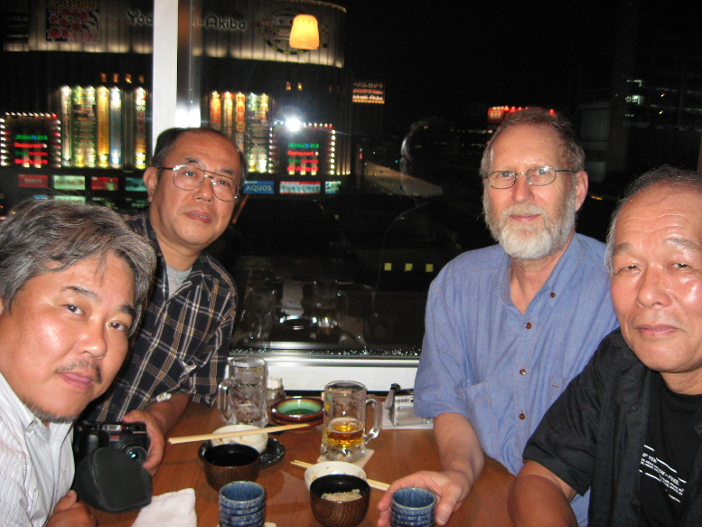
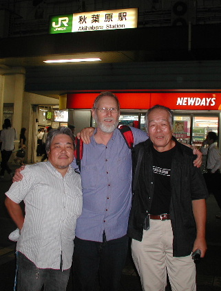

| 6m Today ! |
The next solar minimum will likely occur sometime between
December 2006 and March 2008
with cycle 24 peaking in 2011.
[Back Issues Sep.2007]
TIME:UTC(JST-09:00)
Report from JA1RJU (PM95sq)
30.Sep.2007(15:00c)
*BY-TV 07:00- 49.750 --
DU7/PA0HIP 07:47 50.115 SSB strong!
DU7/PA0HIP 07:54 50.105 CW
29.Sep.2007(15:00b)
|
暦の上では完全に"秋"なのだが、10月も近いと言うのに"真夏日"が続いた異常気象同様、
今年の秋のコンデションも少し異常だ。
"Solar and geomagnetic data"のSunspot number(黒点数=SSN)も、9/7日から9/27日まで20日間も"0"が並んだ。
この時期はちょうど3B7C(St.Brandon)が運用していた時期でHF帯のハイバンドではそれなりの伝搬が認められたのだが、
6mのコンデションは全く静かだった。 9/28日でSSNの"0行進"は終ったが、下降し続けていたサイクル23がこれで底をついたのなら、 これから上昇期へのきっかけになるのだが、今のところ45/46MHz帯のTEPによるZL/VK-TVの入感の兆候もない。 |
28.Sep.2007(15:00b) 27.Sep.2007(15:00b) 26.Sep.2007(15:00b) 25.Sep.2007(15:00b)
|
9月7日から始まったFSDXAによる3B7C(St.Brandon)からのDX-Peditionの運用は、9月25日の03:31zで全ての運用を終了した。
160mから10mまでのHFオールバンドでJAにも良く聞こえて、暫定QSO数は約130,000。
同じFSDXAが運用したD68C、3B9Cに続く歴代3位のQSO記録を残した。 サンスポットサイクルの最低期では50MHzでの伝搬は期待出来ないのではと当初から予想されていたが、 残念ながら予想したとおり6mのオープンは無かった。 去る9/10日のクラスターに、TEPにより北半球との伝搬で中部アジアや東欧との"QSO"がリポートされていたが、 その後の情報では、伝搬はビーコンの受信だけだった様で、正式なQSOはFSDXAからは発表されていない。 |
24.Sep.2007(15:00b) *BY-TV 01:00- 49.750 -- 23.Sep.2007(15:00b) *BY-TV 07:00- 49.750 -- 22.Sep.2007(15:00b) *BY-TV 08:00- 49.750 -- 21.Sep.2007(15:00b) 20.Sep.2007(15:00b) *BY-TV 07:30- 49.750 -- *9M-TV 07:30- 48.240/260 -- Report from JA1RJU (PM95sq) 19.Sep.2007(15:00b) *BY-TV 00:00- 49.750 -- 18.Sep.2007(15:00c)
|
FSDXAによる3B7C(St.Brandon)からのDX-Peditionは9月7日に運用を開始し一週間が経った。 HF帯では連日JAでも強力に入感してバンドを賑わしているが、残念ながら今のコンデションでは50MHzでJAへの入感は非常に難しい。 運用開始直後に、東欧から50MHzのTEPの入感レポートも上がっていたが、その後はリポートされていない。 そんな中、Chagos Is(Diego Garcia)のVQ9JKからMSによる3B7CのBeacon入感リポートが17日のクラスターに上がっていた。 3年前(2004年)の3B9CのDX-Peditionでの50MHzの初QSOはVQ9だったが、 この時は朝方に入感したスキャッター気味の弱い信号だった。 3B7C-VQ9は距離的にも近いのでMS伝搬でのQSOは可能だ。 3B7C-VQ9 MS ---------------------------------------------------------------------------- VQ9JK 50090.0 3B7C Beacon via MS into Diego Garcia 1533 17 Sep ---------------------------------------------------------------------------- |
17.Sep.2007(15:00b)
*BY-TV 10:00- 49.750 --
16.Sep.2007(15:00c)
*BY-TV 13:20- 49.750 --
BV2NT/B 13:20- 50.001 CW Beacon strong!
15.Sep.2007(15:00b)
Report from JA1RJU (QM06cb)
14.Sep.2007(15:00b)
Report from JA1RJU (PM95sq)
13.Sep.2007(15:00b)
*BY-TV 01:30- 49.750 --
12.Sep.2007(15:00b)
11.Sep.2007(15:00c)
DU7/PA0HIP 09:02 50.110 CW
EU-AF TEP starting! ***************** 2007/09/10 ************************************* 9Q1D/B 2201Z 50021.0 429 MM5AJW 9Q1D/B 2154Z 50021.0 519 slow qsb PB0AHX 9Q1D/B 2149Z 50021.0 also 519 here LY3UM 9Q1D/B 2143Z 50021.0 418 TEP starting !!! 9A5CW ********************************************************************** |
|
FSDXAによる3B7C(St.Brandon)からのDX-Peditionはいよいよ9月7日から運用を開始した。
160mから6mまでのオールバンドで一斉に運用を開始、JAからもHF帯の各バンドでQSOが行われている。 サンスポットサイクルの最低期では50MHzでの伝搬は期待出来ないのではと予想されていたが、 今日(9/10日)のクラスターには、UK9AAの中部アジアやLY3UM、UR5MDなど東欧とのQSOがリポートされている。 この伝搬は赤道を挟んでの南北のTEPのパスと思われるが、JAからのTEPの伝搬で代表的なVK/ZLのパスがまだ無いこの時期に、 既にインド洋上では一足早くTEPにより北半球との伝搬が使えるコンデションになっていたことに驚かされた。 今のところTEP伝搬でも南北の"狭い範囲"のオープンなので、3B7C→JAの様に赤道を斜めに横切るパスは難しいと思われるが、 運用を開始したばかりで、早くも6mでQSO出来たことで、コンデション次第でJAからのQSOの可能性も"ゼロでない事"に期待したい。 3B7Cの運用は9月24日までの予定。 3B7C 6mでもQSO!! ------------------------------------------------------------------ 3B7C 0750Z 50102.0 529 thanks new one! UR5MD 3B7C 0712Z 50102.0 519 LY3UM 3B7C 0701Z 50102.0 UK9AA ----------------------------------------------------------------- |
08-09.Sep.2007(00:00a)
◎今週末の(PM95sq)からのDXリポートは休止します(6SG Meeting)。
07.Sep.2007(15:00d)
*BY-TV 00:00- 49.750 --
BV2NT/B 01:50- 50.001 CW Beacon
VR2SIX/B 01:50- 50.075 CW Beacon
HL2IPL 02:51 50.110 SSB
| 台風9号は未明に神奈川県小田原市付近から関東地方に上陸、東京都西部の八王子市付近を通過後、 関東平野を縦断するルートで通り抜けた。台風は午前中に東北地方をゆっくり北上していて夕方には北海道に抜ける予定。 関東平野の中央部縦断の台風は久しぶりで、強風が吹き荒れたため多くのアンテナの被害が懸念される。 |
06.Sep.2007(15:00d)
*BY-TV 00:30- 49.750 --
BD7KLO 01:30 50.110 SSB CQing
VR2SIX/B 01:40- 50.075 CW Beacon
BV2NT/B 01:40- 50.001 CW Beacon
VR10UW 01:41 50.110 CW
BA4XA 01:43 50.110 SSB CQing
BD7KLO 01:55 50.085 CW
HL2IPL 07:58 50.110 SSB
|
強い台風9号が東海・関東地方にかけて上陸の可能性が出てきた。
関東地方では午前中から断続的に豪雨となり、関東西部地域でも夕方から強風が吹き始めた。
台風は太平洋上東方に後退した高気圧の"ヘリ"を通るかたちで北上していて、
偏西風もはるか北日本の上空を横切っているため、このまま進むと深夜から明け方にかけて、
関東地方を縦断、東北、北海道に抜ける最悪のコースを通ることが予想される。 午後10時過ぎにはついに東京の一部も暴風域に入った。 |
05.Sep.2007(15:00b) *BY-TV 03:00- 49.750 --


04.Sep.2007(15:00c)
EI6IZ 14:30- 50.171 JT65A EME(IO53-QM06)-28dB Longpath
03.Sep.2007(15:00b)
02.Sep.2007(15:00b)
*BY-TV 01:30- 49.750 --
01.Sep.2007(15:00b)